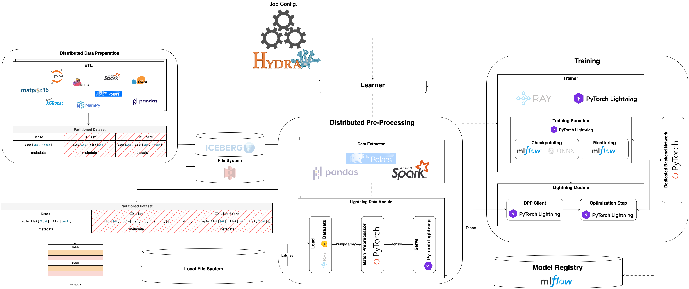

Overview#
What is this project for?#
Yggdrasil is a template for building deep learning projects. It provides a structure for organizing code, data, and documentation, making developing and maintaining machine learning models easier. This specific repository was developed for my purposes, bringing my implementations of the models and architectures. The structure of the code makes these models reproducible and easy to use. It is designed to be flexible and extensible, allowing users to add new features and functionality easily.
Architecture#
The architecture of the yggdrasil is inspired by the Meta’s architecture for the Recommendation System. The pipeline is designed to be modular and extensible, allowing users to easily add new features and functionality.
{kind=link}

The architecture consists of several components, each responsible for a specific part of the pipeline, which are the logical parts of the entire ML lifecycle. The components are:
Distributed Data Preparation
In general, this component is responsible for preparing the data for training. It’s usually called ETL (Extract, Transform, Load). The data is extracted from a source, transformed into the desired format, and loaded into the target filesystem.
Note
This component depends only on the user. The tools, process, code style, and other aspects of the data preparation are up to the user. The only requirementnt is that the data be stored in a specific format.
import pyspark.sql.types as T
import pyspark.sql.functions import F
from pyspark.sql import SparkSession
from sklearn.datasets import fetch_openml
# Initialize Spark session
spark = SparkSession.builder \
.config("spark.sql.warehouse.dir", "wharehouse") \
.appName("MNIST_ETL") \
.getOrCreate()
# Extract raw data
pdf = fetch_openml('mnist_784', version=1, as_frame=True).frame
df = spark.createDataFrame(pdf)
# Here ypu can apply any type of transformation you want ...
# Mandatory transformation for the further data pre-processing
feature_cols = [str(i) for i in range(784)]
df = df.withColumn("id", F.monotonically_increasing_id()).withColumn(
"sparse_vector",
F.create_map(
*list(
sum(
[
(F.lit(fid).cast("int"), F.col(f"`{fname}`").cast("double"))
for fid, fname in enumerate(feature_cols)
],
(),
)
)
)
).drop(*feature_cols).withColumnRenamed("sparse_vector", "features")
# Store the data in a dedicated warehouse
spark.sql("DROP TABLE IF EXISTS mnist_784")
df.select(
F.col("id").cast(T.LongType()).alias("id"),
F.col("features").cast(T.MapType(T.IntegerType(), T.FloatType())).alias("features"),
F.col("class").cast(T.ShortType()).alias("label"),
).write.mode("overwrite").format("parquet").saveAsTable("mnist_784")
import pandas as pd
from sklearn.datasets import fetch_openml
# Extract raw data
df = fetch_openml("mnist_784", version=1, as_frame=True).frame
# Here ypu can apply any type of transformation you want ...
# Mandatory transformation for the further data pre-processing
feature_cols = [str(i) for i in range(784)]
df[feature_cols] = df[feature_cols].astype(float)
df = df.assgin(
id=df.index,
features=df[feature_cols].apply(lambda row: dict(enumerate(row)), axis=1)
)
df = df.drop(columns=feature_cols)
df = df[["id", "class", "features"]].rename(columns={"class": "label"})
# Store the data in a dedicated warehouse
df.to_parquet("wharehouse/mnist_784.parquet", index=False)
import polars as pl
from sklearn.datasets import fetch_openml
# Extract raw data
pdf = fetch_openml("mnist_784", version=1, as_frame=True).frame
df = pl.from_pandas(pdf)
# Here ypu can apply any type of transformation you want ...
# Mandatory transformation for the further data pre-processing
feature_cols = [str(i) for i in range(784)]
df = df.with_columns([pl.col(col).cast(pl.Float64) for col in feature_cols])
df = df.with_columns([
features=pl.struct(feature_cols).map_elements(
lambda x: {i: x[str(i)] for i in range(NUM_FEATURES)}
)
])
df = df.with_row_index(name="id", offset=0)
df = df.select(["id", "class", "features"]).rename({"class": "label"})
# Store the data in a dedicated warehouse
df.write_parquet("wharehouse/mnist_784.parquet", index=False)
Distributed Pre-Processing
This component is responsible for pre-processing the data. It is unified and can be used for any type of data. The pre-processing is done in a distributed manner, allowing for faster processing and better scalability.
The preprocessing is done in three steps. First, the data is extracted from the prepared table, which is acquired in the previous step. Then, the data is subsampled based on the sample range. Finally, the data is transformed into a dense format, which is required for the further processing.
import pyspark.sql.functions as F
import pyspark.sql.types as T
from pyspark.sql import DataFrame
from yggdrasil.core.dtypes.dataset import ParquetDataset
from yggdrasil.core.dtypes.preprocessing.base import InputColumn
from yggdrasil.data.data_extractor.base import DataExtractor
from yggdrasil.data.etl import spark
def select_relevant_columns(df: DataFrame) -> DataFrame:
select_cols = [
F.col(InputColumn.SAMPLE_ID).cast(T.LongType()),
F.col(InputColumn.FEATURES).cast(T.ArrayType(T.FloatType())),
F.col(f"{InputColumn.FEATURES}_presence").cast(T.ArrayType(T.BooleanType())),
F.col(InputColumn.TARGET).cast(T.FloatType()),
]
return df.select(*select_cols)
class MNISTDataExtractor(DataExtractor):
r"""
MNIST supervised (default) data extractor.
"""
def query_data(
self, table_identifier: str, sample_range: tuple[float, float]
) -> ParquetDataset:
session = spark.init.get_spark_session()
df = spark.extract.query_original_table(session, table_identifier)
df = spark.extract.hash_and_subsample(
df, sample_range=sample_range, hash_cols=["id"]
)
df = spark.transform.make_sparse2dense(
df,
"features",
possible_keys=spark.extract.get_distinct_keys(df, "features"),
)
df = select_relevant_columns(df)
dataset_url = spark.load.upload_as_parquet(session, df)
return ParquetDataset(dataset_url=dataset_url)
Once the data is extracted and pre-processed, it is stored in a dedicated warehouse, which is a Parquet dataset. Then, this dataset is loaded in the batch manner to a datamodule. The same pre-processing steps should be applied to each batch of data. Batch preprocessor is responsible for this logic. It accepts a dictionary of tensors as input and returns a tensor data class as output. Inside the batch preprocessor, you can apply any transformations you want to the tensors. Also, it’s highly recommended to use the preprocessor to normalize the data using different normalization techniques.
import torch
from yggdrasil.core.dtypes.base import ExtraData
from yggdrasil.core.dtypes.classification.base import MulticlassPreprocessedInput
from yggdrasil.core.dtypes.preprocessing.base import InputColumn
from yggdrasil.preprocessing.batch_preprocessor import BatchPreprocessor
from yggdrasil.preprocessing.normalization import sort_features_by_normalization
from yggdrasil.preprocessing.preprocessor import Preprocessor
class MNISTBatchPreprocessor(BatchPreprocessor):
def __init__(self, features_preprocessor: Preprocessor) -> None:
super().__init__()
self.features_preprocessor = features_preprocessor
def forward(self, batch: dict[str, torch.Tensor]) -> MulticlassPreprocessedInput:
batch_dict = {}
_, _, indcs = sort_features_by_normalization(
self.features_preprocessor.normalization_params
)
batch_dict["features"] = self.features_preprocessor(
torch.index_select(
batch[InputColumn.FEATURES],
dim=1,
index=torch.tensor(indcs),
),
torch.index_select(
batch[f"{InputColumn.FEATURES}_presence"],
dim=1,
index=torch.tensor(indcs),
),
)
batch_dict["extras"] = ExtraData(sample_id=batch[InputColumn.SAMPLE_ID].long())
batch_dict["target"] = batch[InputColumn.TARGET].unsqueeze(-1).float()
batch_dict["nclasses"] = 10 # MNIST has 10 classes (0-9)
return MulticlassPreprocessedInput.from_input(**batch_dict)
The last component is a datamodule, which is responsible for orchestrating the data loading and pre-processing. It calls the data extractor to get the data, computes the metadata, loads the batches of the data applying the batch preprocessor, and passes the unified data (tensor data classes) to the model for training.
from yggdrasil.core.dtypes.dataset import ParquetDataset, TableSpec
from yggdrasil.core.dtypes.options import DatasetOptions, PreprocessingOptions
from yggdrasil.core.dtypes.parameters import (
NormalizationData,
NormalizationKey,
)
from yggdrasil.core.dtypes.preprocessing.base import InputColumn
from yggdrasil.data.data_extractor.mnist import DataExtractor
from yggdrasil.data.datamodules.manual import ManualDataModule
from yggdrasil.data.etl import spark
from yggdrasil.preprocessing.preprocessor import Preprocessor
class MNISTDataModule(ManualDataModule):
def __init__(
self,
*,
input_table_spec: TableSpec | None = None,
data_extractor: DataExtractor | None = None,
setup_data: dict[str, str] | None = None,
saved_setup_data: dict[str, str] | None = None,
dataset_options: DatasetOptions | None = None,
features_preprocessing_options: PreprocessingOptions | None = None,
) -> None:
super().__init__(
input_table_spec=input_table_spec,
data_extractor=data_extractor,
setup_data=setup_data,
saved_setup_data=saved_setup_data,
dataset_options=dataset_options,
)
self.features_preprocessing_options = (
features_preprocessing_options or PreprocessingOptions()
)
def run_feature_identification(
self, table_identifier: str
) -> dict[str, NormalizationData]:
session = spark.init.get_spark_session()
features_normalization_params = spark.transform.identify_normalization_params(
session=session,
table_name=table_identifier,
col_name=InputColumn.FEATURES,
preprocessing_options=self.features_preprocessing_options,
seed=42, # Fixed seed for reproducibility
)
return {
NormalizationKey.FEATURES: NormalizationData(features_normalization_params)
}
def query_data(
self,
table_identifier: str,
sample_range: tuple[float, float],
data_extractor: DataExtractor,
) -> ParquetDataset:
return data_extractor.query_data(table_identifier, sample_range)
def build_batch_preprocessor(self) -> MNISTBatchPreprocessor:
if self.normalization_dict is None:
msg = "Normalization dict must be defined"
raise ValueError(msg)
features_normalization_data = self.normalization_dict[NormalizationKey.FEATURES]
features_norm_params = features_normalization_data.dense_normalization_params
features_preprocessor = Preprocessor(normalization_params=features_norm_params)
return MNISTBatchPreprocessor(features_preprocessor=features_preprocessor)
Training
This component is responsible for training the model.